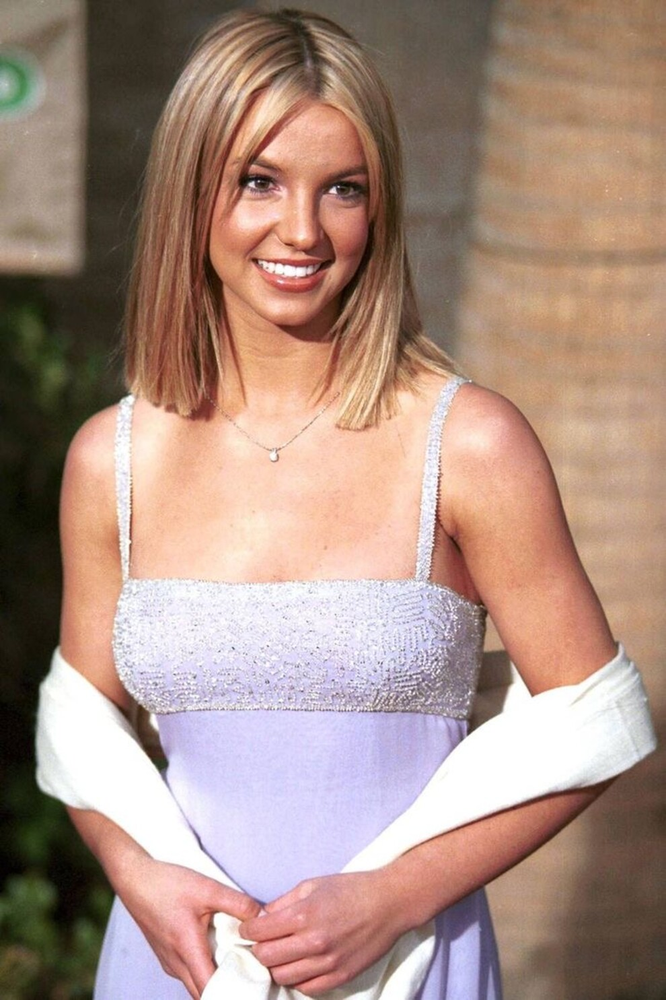

Родилась 2 декабря 1981 года в городе Мак-Ком (штат Миссисипи). Мать Спирс — Линн Айрен Бриджес, бывшая учительница в начальной школе и тренер по аэробике, отец — Джеймс Парнелл Спирс, по профессии строитель и повар. Брат Спирс Брайан работает менеджером в интересах семьи, он женат на Грасьелле Ривера, их свадьба состоялась в самом начале 2009 года. Сестра Джейми Линн — актриса мини-сериалов (также в 2002 году снялась в фильме «Перекрёстки») и кантри-певица. Бабушка по материнской линии, Лиллиан Вулмор, родилась в Тоттенеме, и познакомилась с дедушкой Спирс, Барнеттом О’Филдом Бриджесом, в Англии в период Второй мировой войны. Бабушка и дедушка Спирс по отцовской линии — Джун Остин Спирс и Эмма Джин Форбс. До 9 лет Спирс профессионально занималась художественной гимнастикой, принимала участие в региональных соревнованиях, а также пела в церковном хоре местной баптистской церкви. Девочка также участвовала в детских конкурсах красоты и песенных состязаниях. В возрасте 8 лет Спирс прошла прослушивание для участия в шоу «Клуб Микки Мауса» на канале «Дисней» (Disney Channel). И хотя продюсеры решили, что Спирс слишком молода для участия в шоу, они представили её агенту в Нью-Йорке. Следующие 3 года Бритни училась в актёрской школе Professional Performing Arts School в Нью-Йорке и участвовала в нескольких постановках, в том числе «Ruthless!» 1991 года. В 1992 году Спирс участвовала в конкурсе Star Search, но проиграла во втором туре. В 1993 году Спирс вернулась на канал «Дисней» и в течение двух лет участвовала в шоу «Клуб Микки Мауса». Другие будущие знаменитости, начинавшие с этого шоу — Кристина Агилера, участники ’N Sync: Джастин Тимберлейк и Джейси Чейзес, звезда сериала «Счастье» Кери Расселл и актёр Райан Гослинг. В 1994 году шоу закрыли, Бритни вернулась домой в Луизиану, где поступила в среднюю школу. Некоторое время она пела в девичьей группе Innosense, но вскоре, решив начать сольную карьеру, записала демодиск, который попал в руки продюсерам из Jive Records, и те заключили с ней контракт. Далее последовал тур по стране, выступления в супермаркетах и работа на разогреве у групп ’N Sync и Backstreet Boys.
В июле 2004 года, спустя три месяца после знакомства, Спирс и Кевин Федерлайн объявили о помолвке. До этого Федерлайн встречался с актрисой Шар Джексон, которая к тому времени была на 8-м месяце беременности. Начальный этап отношений Спирс и Федерлайна был запечатлён в реалити-шоу Britney & Kevin: Chaotic, которое транслировалось с мая по июнь 2005 года на канале UPN. 18 сентября Спирс и Федерлайн поженились в доме друга в присутствии нескольких десятков гостей. Это произошло в лос-анджелесском районе Студио-Сити. Официально брак стал действительным 6 октября. После свадьбы Спирс объявила на веб-сайте о перерыве в карьере, а спустя 7 месяцев — о своей беременности. 14 сентября 2005 года в медицинском центре города Санта-Моника (Калифорния), Спирс родила сына Шона Престона Федерлайна. Спустя несколько месяцев после родов начались разговоры о том, что Бритни снова беременна. Она объявила о своей второй беременности в мае 2006 года на шоу Дэвида Леттермана. Через месяц она также появилась на шоу Dateline и опровергла слухи о разводе. Также Спирс прокомментировала инцидент с вождением машины, когда она держала на коленях своего 5-месячного сына: «Я инстинктивно приняла меры к тому, чтобы скрыть моего ребёнка и себя саму, но папарацци продолжали нас преследовать и сделали снимки, которые затем были проданы». В августе 2006 года Спирс появилась обнажённой на обложке журнала Harper’s Bazaar. 12 сентября этого же года в Лос-Анджелесе на свет появился второй сын Спирс, Джейден Джеймс Федерлайн. 7 ноября 2006 года Спирс подала на развод, указав в иске в качестве причины развода «неразрешимые противоречия». В исковом заявлении Спирс не потребовала алиментов от Федерлайна, но пожелала, чтобы дети остались с ней, а их отцу было предоставлено право посещать их. На следующий день Кевин Федерлайн подал встречный иск в суд Лос-Анджелеса с просьбой опеки над двумя их общими детьми. Адвокат Федерлайна заявил, что развод застал его клиента врасплох. В марте 2007 года все спорные вопросы были улажены, и 30 июля Спирс и Федерлайн подписали соглашение о разводе. В сентябре 2007 года суд объявил, что Спирс должна регулярно сдавать кровь на содержание наркотиков и алкоголя, а также обязал Спирс и Федерлайна посещать курсы для родителей «Воспитание без конфликтов». В ноябре 2007 года результаты одного из тестов на наркотики оказались положительными: в крови у певицы обнаружили амфетамины. При этом Бритни Спирс признавалась в употреблении наркотиков ещё в 2003 году.
Осенью 2007 года Спирс были предъявлены обвинения по двум инцидентам: оставление места ДТП и вождение автомобиля с недействительными в штате Калифорния правами. Спирс грозил тюремный срок. Позже все обвинения были с неё сняты. 1 октября 2007 года Федеральный суд Лос-Анджелеса передал право опеки над детьми Кевину Федерлайну. 3 января 2008 года Спирс была госпитализирована в медицинский центр Cedars Sinai в Лос-Анджелесе после того, как отказалась добровольно передать детей бывшему мужу после истечения времени разрешённого судом посещения. К её дому были вызваны полицейские, которые пытались решить дело «мирно, в соответствии с постановлением суда». По словам офицера местной полиции, Спирс находилась под воздействием неизвестного вещества, однако анализы на наличие в её крови алкоголя и наркотиков оказались отрицательными. Её выписали из больницы два дня спустя. На судебном слушании 14 января 2008 года мировой судья вынес постановление, согласно которому Спирс запрещается посещать своих детей, удовлетворив таким образом ходатайство адвоката Федерлайна Марка Каплана. Ожидалось, что на слушании Бритни даст показания, объясняющие её поведение 3 января, однако в зале суда она так и не появилась. Ночью 31 января 2008 года Спирс была повторно госпитализирована, на этот раз в психиатрическое отделение медицинского центра UCLA. Она была признана временно недееспособной; решением суда Лос-Анджелеса её опекуном был назначен её отец, Джеймс Спирс. 31 июля 2008 года состоялось судебное заседание, на котором опекунство отца над Спирс было продлено до конца 2008 года, а на заседании 28 октября 2008 суд продлил опеку на неопределённый срок.